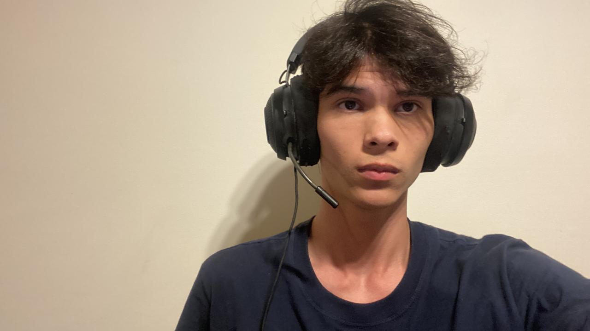

Eu sou Gabriel Cabral_
Eu sou estudante de exatas
Sou um aluno de exatas e utilizo do curso alura para desenvolver diversos projetos ampliando assim meu conhecimento computacional. Aqui tem alguns projetos que já desenvolvi!
Minhas habilidades
HTML
CSS
JavaScript
Scratch
Características da Pessoa
Quem é Gabriel Cabral?
Gabriel Cabral é uma pessoa introvertida e criativa. Ele adora explorar novas ideias e se conecta facilmente com as pessoas ao seu redor. Além de ser curioso e sempre disposto a aprender, ele é conhecido por seu otimismo e sua energia contagiante.
O que eu gosto?
- Livros: Eu adoro ler, especialmente HQs e livros de ficção científica.
- Música: Eu gosto de ouvir rock e música clássica, mas também aprecia explorar novos gêneros musicais.
- Vídeo-game: Eu amo jogar e explorar novos jogos. Seus jogos favoritos são Red Dead Redemption II e Homem-Aranha de PS4.
- Esportes: Ele é fã de futebol e corrida, joga bola assim que tem tempo livre e as vezes assiste basquete também.
- Séries: Eu adoro assistir séries, suas favoritas são The Umbrella Academy, Stranger Things, Breaking Bad e Better Call Saul.